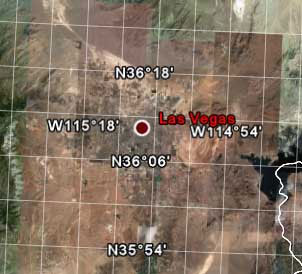
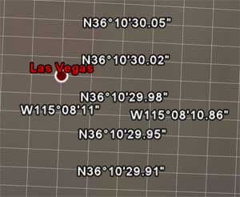
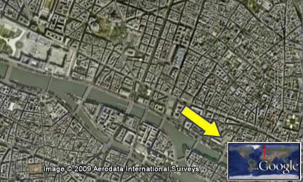
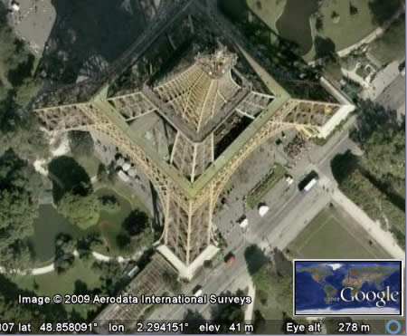
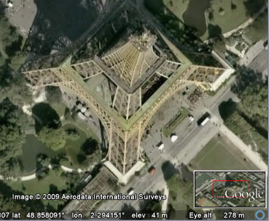

3D Viewer Options
Some of the features described in this section are only available to users of the Google
Earth EC product. Learn
more.
Google Earth provides a number of 3D viewer settings that you can modify, as well as
features you can activate for special 3D display. These include:
To show or hide the 3D viewer toolbar, click Tools > Toolbar.
About Altitude
All altitude and elevation measurements displayed in Google Earth are relative to
Mean Sea Level
(MSL).
Displaying a Lat/Lon Grid
Google Earth provides a special layer accessible from the View menu that displays a grid
of latitude and longitude lines over the imagery in the 3D viewer. To turn on the grid do
one of the following:
- Select View > Lat/Lon Grid.
- Type Ctrl + L (
 + L on the Mac)
+ L on the Mac)
The grid appears over the earth imagery as white lines, with each latitude/longitude
degree line labeled in an axis across the center of the 3D viewer. You can position a
geographical feature in the 3D viewer and determine its basic geo-spatial coordinates
using this grid.
As you zoom in, the level of detail of the degree lines increases. For example, from an
eye elevation of about 100 miles, Las Vegas, Nevada, appears north of the 36th
parallel, and just west of the 115th meridian.

As you zoom to an eye altitude of just above 2000 feet, you can see that the marker for
Las Vegas, Nevada, sits at W115 08'11" and N36 10'29".

The grid lines continue increasing in granularity even after you have zoomed past the
base resolution of the earth imagery.
Switching to Full Screen Mode
Note - Currently, this feature is not supported for Mac versions of
Google Earth.
You can use the Google Earth application in either window or full-screen mode. To enter
full-screen mode, or to return to window mode from full-screen mode:
- Select View - Full Screen from the menu
- Press the F11 key
Switch to full-screen mode for the most dramatic display of earth imagery, such as when
touring places or making presentations.

Setting the View Size
Use the View Size options in under the View menu to select a number of
pre-set aspect ratios designed for best playback modes or printing modes. The selected
option resizes the 3D Viewer for the best display for your intended purpose. For example,
if you have set your computer's display to an overhead projector, you can choose the best
aspect ratio supported for that projector. For best video-quality output, choose the
appropriate TV view setting.
For playback, you can choose Computer or TV. For print, you can choose
from 4 aspect ratios for different paper sizes (see Printing Images for more information). Settings for
each mode include.

|
View Mode
|
Modes
|
|
Computer Playback
|
320 X 240
|
|
640 X 480
|
|
|
|
800 x 600
|
|
|
|
TV Playback
|
NTSC (720 x 486)
|
|
|
PAL (720 x 576)
|
|
|
|
Print Output View Settings
|
8.5" x 11", Landscape
|
|
|
11" x 17", Landscape
|
|
|
|
4" x 6", Landscape
|
|
|
|
5" x 7", Landscape
|
|
Note: Once you choose an aspect ratio, you can always manually resize
the 3D viewer.
Using the Overview Map
The Overview Map window feature displays an additional view of the earth with a
position indicator that corresponds to the current view inside the 3D viewer. In the
following example, Google Earth is positioned over the city of Paris, France. The
Overview window has a cross-hair marker to indicate the position of the view in
relation to the entire earth.

To show or hide the Overview Map window, do one of the following:
- Click View > Overview Map
- Click CTRL ( on the Mac) + M
Overview Map Features
You can use the Overview Map window to:
- Determine position of the current view relative to the entire earth
For example, if you open a KMZ file from the Google Earth Community, the 3D viewer
might fly quickly to a detailed view on the earth that you are unfamiliar with. You can
open the Overview Map window to see the position of the current view relative
to the entire earth. As you adjust the position of the 3D viewer, the indicator in the
Overview map continually adjusts to reflect the current position in the 3D viewer.
- Control the motion in the 3D viewer itself
While the Overview Map window responds to position adjustments in the 3D
viewer, you can also interact directly with the Overview Map window itself.
Double click on any area within the window and both the overview display and the 3D
viewer adjusts position to the point in the Overview Map window that you click
on. For example, if the current view is located in the United States, you can double
click on the African continent and both the Overview Map indicator and the 3D
viewer will move to the new position.
Adjusting the Overview Map Size and Zoom Ratio
To adjust the Overview map preferences, select
Tools > Options > 3D View (Mac: Google Earth
> Preferences > 3D View). Adjust the slider control in the
Overview Map options to scale the Overview map from small to large.
Using the settings in the Options > 3D View tab, you can also adjust
the ratio of territory displayed in the Overview Map window relative to that in the 3D
viewer. This ratio has three basic elements:
-
1:infinity (default setting) - Here, the entire map of the earth is
displayed in the Overview Map window regardless of the amount of territory
displayed in the 3D viewer. This is shown above in the Paris example.
1:1 - The view in the Overview Map window corresponds exactly
to that in the 3D viewer. As shown below, the Overview Map window now draws
the bounds of the current view using a red bounding box. A small amount of the
territory outside the current 3D viewer is displayed in the Overview window.

-
1:n - Here, n corresponds to any number you set,
multiplied by the current view. This creates a relative "zoom" factor, so that you can
choose to zoom out from the current view by 10, 50, or any other factor. The example
below shows the same close-up view of a Paris building with the zoom factor adjusted up
to 260.

Viewing Preferences
You can set a number of preferences to affect 3D viewer imagery, as well as how icons,
labels, and other elements are displayed. To access these settings, do the following:
-
Windows/Linux: Click Tools > Options > 3D
View.
-
Mac: Click Google Earth > Preferences > 3D
View.

Keep in mind that some enhancements affect Google Earth performance; that is, the more
enhancements, the more your computer's resources are required. Settings include:
-
Texture colors - Modify this feature to set the number of bits used to
represent colors in the 3D viewer. True Color (32 bit) produces a more realistic view.
-
Anisotropic filtering (smooth horizon) - Anisotropic filtering is a
method used to filter pixels in texture mapping in order to produce a smoother looking
image. Enabling this feature produces a much smoother image around the horizon when
viewing the earth from a tilted angle. It also requires more graphics card memory, so
use this option only if your graphics card has at least 32 MB of memory. By default,
this option is set to Off.
-
Labels/icon size - Use this feature to change the default size for
labels and icons in the 3D viewer. A setting of Small is optimal for detailed urban
areas where crowding of labels and icons often occurs, but if you typically look at
both large and urban areas, choose Medium so that placemarks viewed from higher
elevations appear in the 3D viewer. See also Tuning
Display of POIs.
-
-
Graphics mode - Most graphic-intensive computer applications
(including Google Earth) rely upon one of two possible 3D rendering capabilities on
your Windows computer: either OpenGL or Direct X. On Linux and the Mac, Google Earth
only supports OpenGL. Because OpenGL is the rendering software for most graphics cards,
Google Earth uses that mode by default. However, your system might require DirectX
(Windows), or your system might run best in safe mode. When you start Google Earth, you
can select the rendering of 3D imagery best suited to your system hardware. If you are
using Windows, Google Earth tries to determine which setting is most suitable for you
graphics card and automatically suggests that you switch.
(Windows only) There are two ways to choose either OpenGL or DirectX as your 3D
graphics rendering software:
-
Start Menu Selection - Select Set DirectX as the Default Renderer
from Programs - Google Earth under the Start menu of your computer, or choose Set
OpenGL... After selecting the graphics mode, a dialog box alerts you to the
selection, and you can start Google Earth to run in the chosen graphics mode.
-
Graphics Mode Selection - Select OpenGL or DirectX from the
Graphics Mode section of the Google Earth Options dialog box.
-
Select the "Safe Mode" feature when you notice problems with the Google
Earth 3D viewer. This option turns off such advanced rendering features as mipmap
texture rendering and filled polygons, thereby reducing the amount of work for your
graphics cards. If the problem is resolved after turning on this feature, the problem
is likely due to your graphics card or graphics card driver. For more information, see
How do I upgrade
my graphics card driver?
-
Show Lat/Long - As you move the mouse pointer in the 3D viewer,
latitude and longitude coordinates are displayed in the lower left corner of the 3D
viewer.
By default, the display of these coordinates is in degrees, minutes, seconds (DD.MM.SS)
or degrees, decimal minutes (DD MM.MMM). This is an example of DD.MM.SS:
You can choose the Degrees option to display geo-coordinates in degrees decimal (e.g.,
37.421927° -122.085110°).
Additionally, you can display these coordinates using Universal Transverse Mercator (e.g. 580954.57 m E 4142073.74 m N)

-
-
Show Elevation - Set the elevation measurement units as they appear
Google Earth. As you move the mouse pointer in the 3D viewer, the elevation of the
terrain beneath the pointer is displayed in the lower left corner of the 3D viewer. By
default, the display of elevation is in feet and miles when high enough.
You can choose to display elevation in meters and kilometers.
-
Fonts - Adjust the font size and appearance for text as it appears in
the 3D viewer. In most cases, use the primary font setting, as the secondary font
setting is only for rare circumstances when there is a problem with your primary font.
Use the secondary if your label data has characters in it that are not available in the
default font of Arial.
-
Terrain quality - Use this slider to set the terrain quality to be
lower (less detailed) quality with better performance or to be higher (more detailed)
quality with slower performance. To adjust the appearance of hills when you have
terrain turned on in the 3D viewer, you can set the Elevation Exaggeration value from
0.n to 3.0, including decimal values. The default setting for this value is 1.
Typically, settings higher than 1.5 create an overly exaggerated appearance for most
terrain. See also Tilting and Viewing Hilly Terrain.
-
Overview Map - See Adjusting the Overview Map
Size and Zoom Ratio.
See also Showing or Hiding Items in the 3D Viewer.
Memory and Disk Cache Preferences
By increasing your memory and disk cache size, you can improve performance (see considerations below). To do this, follow the steps below:
- Click Tools > Options (Google Earth > Preferences on the
Mac). Click on the Cache tab.
- Enter a value in the Memory Cache Size field (see considerations below). You do not need to know the actual
limits of your computer's memory because Google Earth automatically limits the size
according to the physical memory available on your PC.
- Enter a value less than 2000 in the Disk Cache Size field
(see considerations below).
Increasing the size of memory or disk
cache can improve performance but can adversely impact the performance of other
applications. Available memory is dependent on the specifics of your computer. Increasing
memory cache significantly improves performance for printing and movie-making with Google Earth Pro and Google Earth EC. Disk cache
is limited to 2GB. Google Earth uses this cache when you are viewing imagery offline.
This enables you to view the earth without an Internet connection.
You can recover some disk space by deleting the disk cache. To do this:
- Click File > Server Logout.
- Select Tools > Options (Google Earth > Preferences on
the Mac). Click on the Cache tab.
- Click Delete Cache Files.